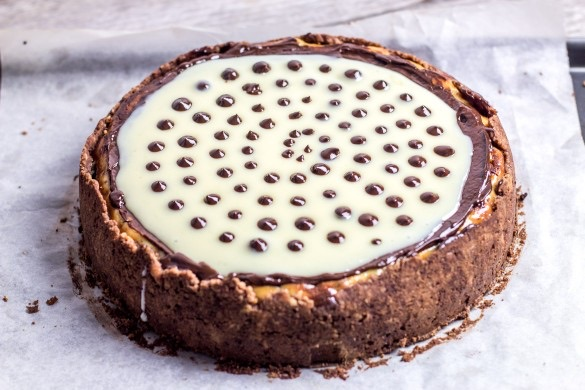
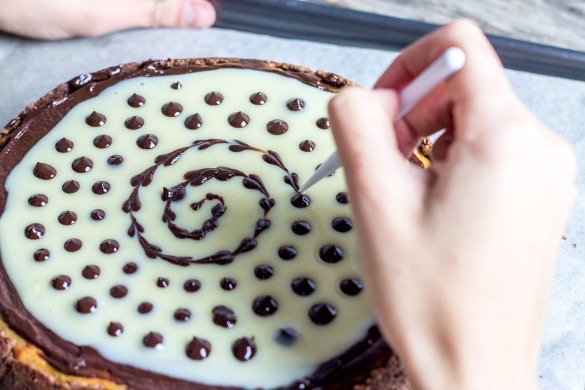
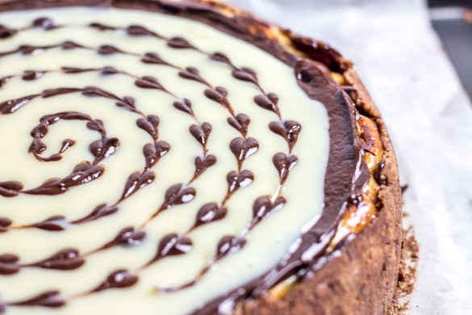
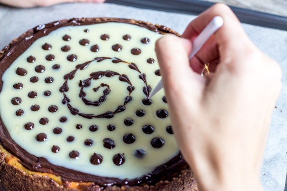
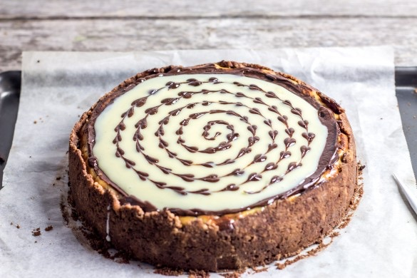
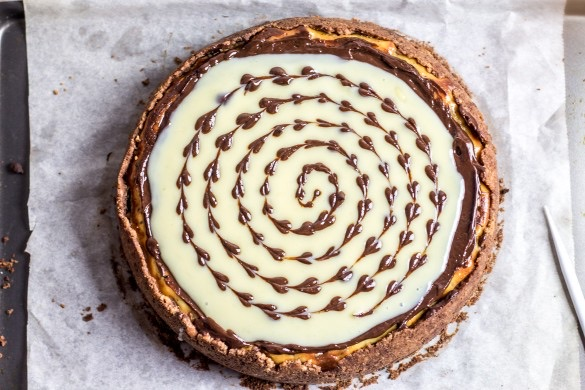

Cheesecake stracciatella

Aujourd’hui me revoilà avec une toute nouvelle recette : un cheesecake stracciatella! Je ne sais pas si c’est goût ou bien sa décoration (avec tous ces petits cœurs) que je préfère mais en tout cas si vous êtes fans de cheesecake cette recette devrait vous plaire!
Il y a tout juste deux jours c’était l’anniversaire de la petite sœur de mon chéri alors c’était évidemment l’occasion parfaite pour faire un gâteau et comme c’était un repas 100% fromage (avec une raclette pour le repas) autant terminer par du fromage avec un bon cheesecake! A vrai dire je n’avais pas beaucoup de temps pour préparer quelque chose (malgré avoir été prévenue 1 semaine en avance^^) et c’est ce qu’il y a de vraiment pratique avec les cheesecakes car plus c’est préparé à l’avance mieux c’est!! J’ai donc préparé ce cheesecake stracciatella 1 jour et demi avant et c’était parfait (il ne me restait plus que la décoration en petits cœurs à préparer le jour J). Le plus important pour moi était qu’elle soit contente et c’est à elle que j’ai demandé si ce cheesecake avait sa place dans mes petites recettes et si je vous parle aujourd’hui c’est qu’elle a dit oui (et surtout qu’elle a beaucoup aimé!).
Ce cheesecake s’appelle cheesecake stracciatella car il rappelle facilement ce parfum de glace à base de fromage (un de mes préféré) dans lequel on retrouve des copeaux de chocolats noirs. Ici on parle stracciatella car oui il y a des copeaux de chocolats noirs mais il y a aussi des copeaux de chocolats blancs (histoire de ne pas faire les choses à moitié!!)! Comme je vous le disais plus haut ce cheesecake était en réalité un cheesecake d’anniversaire alors je ne me suis pas permis de couper une part ce qui explique que vous ne trouverez pas de photos de parts dans l’article. La bonne nouvelle c’est qu’il ne s’agit pas d’une de mes recettes mais d’une recette de Lilie Bakery et vous pourrez donc trouver sur son très chouette blog une belle photo de l’intérieur si vous en avez envie!!
Je vous laisse avec cette petite gourmandise et je vous dis à très vite pour une nouvelle recette (peut-être une galette et sucrée cette fois^^ vous ne m’en voudrez pas?)
Ingrédients
- Philadelphia (cream cheese type St Môret etc..) - 300g
- Ricotta - 500g
- Sucre en poudre - 120g
- Copeaux de chocolat blanc - 100g
- Copeaux de chocolat noir - 100g
- Oeufs - 3
- Galettes Bretonnes - 250g
- Beurre fondu - 100g
- Cacao en poudre - 2 càc
- Chocolat noir - 120g
- Crème liquide - 22cl
- Chocolat blanc - 100g
Instructions
- Préchauffer le four à 160°
- Déposer du papier sulfurisé au fond de votre moule Le mien n'a pas de fond alors je pose mon cercle directement sur une plaque à pâtisserie que j'ai recouverte de papier sulfurisé
- Mixer les galettes bretonnes
- Faire fondre le beurre et versez-le sur les galettes mixées
- Tasser ce mélange au fond de votre moule et sur les parois du moule
- Réserver au frais
- Mélanger bien le cream cheese (Philadelphia, St-Moret....) avec la ricotta (vous pouvez utiliser le robot muni de la feuille pour aller plus vite)
- Verser le sucre et mélanger
- Ajouter les œufs un à un tout en continuant de mélanger
- Ajouter les copeaux de chocolat blanc et de chocolat noir Vous pouvez utiliser des pépites de chocolat blanc et noir ou faire les copeaux à la main à partir d'une plaquette de chocolat
- Bien mélanger
- Verser ce mélange sur la croûte du cheesecake
- Enfourner à 160° pendant 1h10 Pendant la cuisson, le cheesecake va gonfler. En refroidissant il va dégonfler et se mettre à la bonne hauteur par rapport à la croûte. Il va aussi vous paraître "mou" mais c'est normal alors pas d'affolements 😉
- Au bout de 1h10 de cuisson, éteignez le four et laissez le cheesecake refroidir dans le four porte entrouverte
- Une fois que le cheesecake est suffisamment refroidi (1h/2h après), placez-le au frais une bonne demi-journée
- Dans une casserole, verser 120ml de crème liquide entière
- Ajouter le chocolat noir et laissez-le fondre sur feu doux (remuer régulièrement pour qu'il ne brûle pas)
- Bien mélanger pour obtenir une belle ganache toute lisse
- Verser une première couche sur le cheesecake et gardez-en un fond de verre pour pouvoir réaliser les petits cœurs
- Pendant ce temps, verser dans une casserole 100ml de crème liquide entière
- Ajouter le chocolat blanc et laisser fondre comme précédemment
- Verser cette deuxième ganache sur la première
- Avec le reste de chocolat noir restant faire plein de petits points sur le chocolat blanc en essayant de former une spirale ou un escargot (je me suis servie d'une seringue)
- A l'aide d'une pointe très fine, passer au centre de chaque point (sans appuyer) pour former les petits cœurs






Les tips de la communauté
Cheesecake magnifique très apprécié pour son originalité au chocolat blanc et stracciatella. Plusieurs testeurs ont eu un grand succès lors de fêtes familiales. Recette très bien expliquée qui réussit presque toujours au premier essai. L'effet cœur du stracciatella séduit visuellement.
Astuces
- Recette peut être préparée 3 jours avant le service sans problème
- Excellent pour les anniversaires et repas familiaux
- Bien laisser reposer l'appareil avant cuisson
- Attention à la condensation du beurre avec moule à charnière
Ajustements signalés
- Éviter la condensation du beurre en gérant bien la température du four